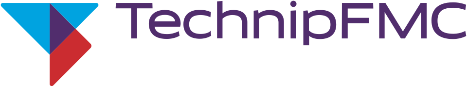

테크닙FMC TechnipFMC
테크닙FMC(TechnipFMC)는 에너지 산업에 서비스를 제공하는 프랑스-미국계 글로벌 석유 및 가스 기업이다. 영국에 본거지를 두고 있으며 2017년 FMC 테크놀로지스와 Technip의 합병으로 설립되었다.
최종 업데이트

테크닙FMC는 어떤 브랜드인가
테크닙FMC는 해저, 해상, 지표 프로젝트라는 세 가지 뚜렷한 부문에서 활동하는 에너지 서비스 기업이다. 이러한 프로젝트에는 해상 석유 및 가스 탐사 및 추출 플랫폼과 시추선이 포함된다.
법적으로는 영국에 주소지를 두고 있으며, 이전 전신 회사들인 FMC Technologies Inc.와 Technip SA의 본사가 있었던 휴스턴과 파리에서 주요 운영을 한다. 회사는 휴스턴, 파리, 런던에 세 개의 본부를 두고 있으며 컨설팅 및 기술 비즈니스는 두 자회사인 PT와 Genesis를 통해 제공한다.
126개 국적의 약 23,000명의 직원을 보유하며 48개국에서 운영되는 글로벌 기업이다. 주식은 뉴욕 증권거래소에 상장되어 있고 러셀 1000 지수와 다우 존스 지속가능성 지수의 성분이다.
테크닙FMC는 어떻게 시작되고 성장했나
테크닙FMC는 미국의 FMC Technologies Inc.와 프랑스의 석유 서비스 기업인 Technip SA의 합병을 통해 형성되었다. 합병은 2016년에 발표되어 2017년에 완료되었다.
2017년 1월 17일 회사는 합병 완료 후 통합 회사로 운영된다고 발표했다. 이는 약 2년 동안의 유가 급락으로 타격을 입은 에너지 산업에 중요한 새로운 주자가 탄생한 일이었다.
2016년에서 2017년 사이에는 DOF-Technip 파트너십 하에 건조된 4척의 파이프 부설선(Skandi Açu, Skandi Buzios, Skandi Olinda, Skandi Recife)이 추가되어 함대가 확장되었다.
테크닙FMC의 브랜드 아이덴티티는 무엇인가
프랑스의 Technip과 미국의 FMC Technologies가 합병해 영국에 법적 주소지를 둔 해저·해상·지표 중심의 석유 및 가스 서비스 기업이다. 휴스턴과 파리를 주요 운영 거점으로 한다.
테크닙FMC의 대표 제품과 서비스는 무엇인가
테크닙FMC는 해저, 해상, 지표 프로젝트의 세 부문에서 사업을 한다. 엄빌리컬 케이블과 플렉시블 파이프를 설계 및 제조하며, 플렉시블 파이프 제조 공장은 프랑스, 브라질, 말레이시아에 있다.
엄빌리컬 생산 시설은 영국, 미국, 싱가포르, 브라질, 말레이시아에서 운영한다. 21척의 선박을 소유 및 운영하며 4척이 건조 중이고, 이 선박들은 해저 석유 추출 시스템 설치에 사용된다.
선박은 플렉시블 부설 및 건설 선박, 잠수 및 다목적 지원 선박, 리짓 S-Lay 및 헤비 리프트 선박, 리짓 Reel-lay 및 J-Lay 선박의 네 범주로 나뉜다.
테크닙FMC는 지금 어떤 상태인가
2019년 8월 두 개의 독립적인 엔지니어링 회사로 분할하겠다고 발표했으며, 해저 사업이 제외된 이전 Technip 법인은 Technip Energies로 명칭이 변경되었다. 2020년 3월 15일에는 코로나19 범유행에 따른 시장 여건으로 분사 중단을 발표했으나, 2021년 2월 분사가 완료되었다.
현재 126개 국적의 약 23,000명의 직원을 보유하며 48개국에서 운영된다.
테크닙FMC 로고는 어떻게 변해왔나
자주 묻는 질문
테크닙FMC는 어느 나라 브랜드인가요?
테크닙FMC는 영국의 에너지·산업재 브랜드입니다.
테크닙FMC는 언제 설립되었나요?
테크닙FMC는 2017년 설립되었습니다.
테크닙FMC의 브랜드 아이덴티티는 무엇인가요?
프랑스의 Technip과 미국의 FMC Technologies가 합병해 영국에 법적 주소지를 둔 해저·해상·지표 중심의 석유 및 가스 서비스 기업이다.
테크닙FMC의 대표 제품은 무엇인가요?
테크닙FMC는 해저, 해상, 지표 프로젝트의 세 부문에서 사업을 한다.
테크닙FMC는 현재 어떤 상태인가요?
2019년 8월 두 개의 독립적인 엔지니어링 회사로 분할하겠다고 발표했으며, 해저 사업이 제외된 이전 Technip 법인은 Technip Energies로 명칭이 변경되었다.
테크닙FMC의 본사는 어디에 있나요?
테크닙FMC의 본사는 런던에 있습니다(위키데이터 기준).
테크닙FMC의 공식 웹사이트는 어디인가요?
테크닙FMC의 공식 웹사이트는 http://www.technipfmc.com 입니다.
출처와 검증
테크닙FMC 관련 참고: 공식 웹사이트 · 위키데이터 Q30324333 · 한국어 위키백과 · 영어 위키백과. 브랜드명은 한글과 원어를 함께 표기하되 데이터에 없는 표기는 만들지 않습니다. 기원 국가·설립연도는 검수된 정의문에서 확인된 값을 우선하고, 없을 때만 공식 웹사이트 URL이 일치하는 위키데이터 개체의 값을 씁니다. 탄생일의 월·일은 위키데이터, 위키백과 정보상자, 본문 가운데 같은 연월로 확인되는 값만 싣고, 출처끼리 다르면 싣지 않습니다. 위키데이터 값은 2026-11-14 기준입니다.